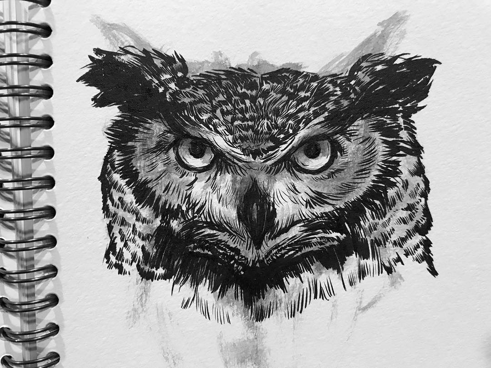

Work
Breeze Magazine
Kota Kinabalu, Sabah
I joined the creative team as a design intern for 2 months and worked in providing design works, met and interviewed several famous figures, as well as attended numerous local events.
Lumiere Creativo
Kuching, Sarawak
I worked as the assistant Graphic Designer in visual design, advertising and branding of several corporate events. I also worked behind the scenes with the event crew during preparations and launching, as well as assisting in the event coordination.
VM Creative Consultants
Kuching, Sarawak
I began working freelance remotely in providing advertising, visual, branding, illustration and photography work.
Skills
- Adobe Photoshop
- Adobe Illustrator
- Adobe Premiere Pro
- Branding Design
- Advertising Design
- Illustrations
- Photography
I consider myself one of the luckiest people in the world, because I get to do what I love and call it a job! I have managed to make a career for myself by mixing art, design, writing, travelling and photography all together!
